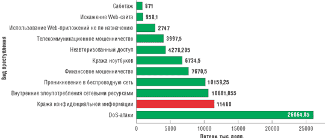
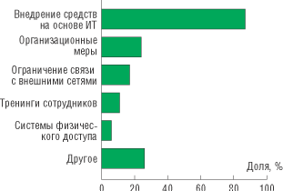
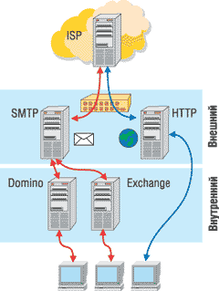
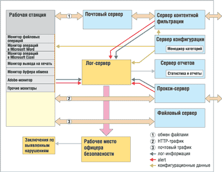
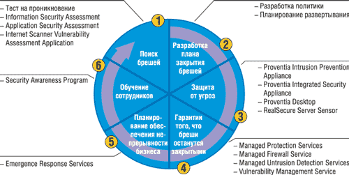
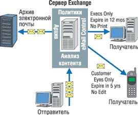
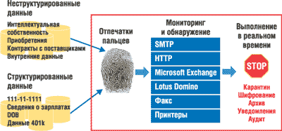
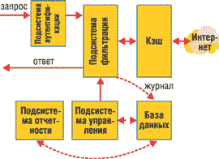

Обзор подготовлен по материалам, предоставленным компанией InfoWatch (http://www.infowatch.ru).
Фокус в обеспечении ИТ-безопасности крупных компаний сегодня сместился с защиты от внешних угроз - вредоносных кодов, сетевых атак и фильтрации спама - к предотвращению атак, исходящих изнутри. Кражи конфиденциальных сведений, умышленные и случайные противоправные действия сотрудников, нецелевое использование сетевых ресурсов компании - все это приводит к прямым финансовым убыткам, ухудшению имиджа и потере доверия клиентов. Серьезность поставленных проблем подтверждается и последними исследованиями ведущих западных и российских организаций*.
* См. также статью "Угрозы внешние и внутренние", "BYTE/Россия" No 4'2005.
Согласно отчету CSI/FBI Computer Crime and Security Survey, за 2004 г. число внутренних атак и внешних примерно сравнялось. Хотя наибольший ущерб в предыдущем году нанесли DOS-атаки, значительная часть убытков пришлась именно на инциденты внутренней ИТ-безопасности: кражу конфиденциальных данных, внутренние злоупотребления сетевыми ресурсами, саботаж и т. д. (рис. 1).
|  |
| Рис. 1. Финансовые потери от преступлений различных видов. Источник: 2004 CSI/FBI Computer Crime and Security Report.
|
Определенный интерес представляет исследование Ernst & Young Global Information Security Survey 2004, охватившее 1233 организации в 51 стране. Один из ключевых выводов, сделанных в отчете, состоит в том, что компании по всему миру не справляются с охраной своей информации от становящихся все более мощными компьютерных угроз и прежде всего от тех, которые исходят от их собственных сотрудников.
В России проблема защиты от внутренних угроз ИТ-безопасности стоит не менее остро. Это подтверждает исследование "Внутренние ИТ-угрозы в России 2004", проведенное компанией InfoWatch в начале 2005 г. и охватившее около 400 крупных компаний. Больше половины респондентов (62%) считают, что противоправные умышленные или случайные действия служащих представляют собой самую большую угрозу для российских организаций, а 98% респондентов указали на нарушение конфиденциальности информации как на самую опасную внутреннюю угрозу ИТ-безопасности.
Таким образом, компаниям необходимы механизмы, позволяющие избежать или по крайней мере минимизировать риски возникновения инцидентов внутренней ИТ-безопасности. В арсенал таких средств могут входить организационные меры (создание соответствующей нормативной базы и политики ИТ-безопасности, модификация трудовых договоров и т. д.), ограничения различного рода, тренинги и системы физической безопасности, однако самым эффективным решением считается внедрение средств на основе ИТ. Такого мнения придерживается подавляющее большинство респондентов (87%), опрошенных компанией InfoWatch (рис. 2).
|  | Рис. 2. Способы защиты от утечки данных.
|
Средства на основе ИТ должны вести активный мониторинг всех путей утечки информации (электронная почта, Web-каналы, мобильные носители, печать на бумаге и т. д.), поддерживать расширенные возможности аудита (кто, когда, что и с каким документом делал) и вдобавок защищать сетевые ресурсы компании от нецелевого использования (предотвращение рассылки личной информации по электронной почте, посещения сайтов неделовой направленности и т. д.).
На рынке представлено несколько решений, так или иначе удовлетворяющих изложенным выше требованиям. Это прежде всего продукты компаний InfoWatch, "Инфосистемы Джет", SurfControl, Clearswift, IPLocks, ISS, PortAuthority, Liquid Machines, а также отдельная программа PC Acme, поставляемая компанией Raytown Corporation LLC и иногда рассматриваемая как средство для защиты от утечек конфиденциальных данных. Характеристикам и функциональности именно этих решений (см. таблицу) посвящена данная статья.
Характеристики средств защиты от утечек конфиденциальных данных
| Clearswift | Info-Watch | IPLocks | ISS | Liquid Machines | PC Acme (Raytown Corp.) | Port-Authority | Surf-Control | Инфо-системы Джет | |
| Комплексность решения | Да | Да | Да | Да | Нет | Нет | Да | Да | Нет |
| Функциональность | |||||||||
| Защита от утечки посредством ресурсов электронной почты и Web-каналов | Да (только e-mail) | Да | Нет | Да (только e-mail) | Да | Нет | Да | Да | Да |
| Защита от утечки посредством мобильных носителей и ресурсов рабочей станции | Нет | Да | Нет | Нет | Да | Нет | Нет | Нет | Нет |
| Защита от нецелевого использования сетевых ресурсов (Web, e-mail и т. д.) | Да (только e-mail) | Да | Нет | Да | Нет | Нет | Да (только e-mail) | Да | Да |
| Предустановленные правила фильтрации | Да | Да | Нет | Да | Нет | Нет | Нет | Да | Нет |
| Пользовательские правила фильтрации | Да | Да | Нет | Да | Да | Нет | Да | Да | Да |
| Анализ текстовых файлов | Да | Да | Нет | Да | Да | Нет | Да | Да | Да |
| Анализ файлов Microsoft Office | Да | Да | Нет | Да | Да | Нет | Да | Да | Да |
| Анализ файлов формата PDF | Да | Да | Нет | Да | Да | Нет | Да | Да | Нет |
| Анализ упакованных файлов | Да, любого уровня вложен-ности | Да, любого уровня вложен-ности | Нет | Да, любого уровня вложен-ности | Да, любого уровня вложен-ности | Нет | Да, любого уровня вложен-ности | Да, любого уровня вложен-ности | Да, любого уровня вложен-ности |
| Защита и аудит баз данных | Нет | Нет | Да | Нет | Нет | Нет | Нет | Нет | Нет |
| Архивирование электронной почты | Нет | Да | Нет | Нет | Да | Нет | Да | Нет | Да |
| Экспорт архива во внешние обработчики и интеграция в корпоративную систему документооборота | Нет | Да | Нет | Нет | Да | Нет | Нет | Нет | Да |
| Автоматическое рабочее место офицера безопасности | Да | Да | Да | Да | Да | Нет | Да | Да | Да |
| Уведомление офицера безопасности об инцидентах | Нет | Да | Да | Да | Да | Нет | Да | Да | Да |
| Централизованное управление | Да | Да | Да | Да | Да | Да | Да | Да | Да |
| Интеграция в HP Openview | Нет | Да | Нет | Нет | Нет | Нет | Нет | Нет | Да |
| Системные требования | |||||||||
| Поддерживаемые ОС | Windows 2000/ Server 2003 | Linux, FreeBSD | Как у защи-щаемой БД | Windows 2000/ Server 2003 | Windows 2000 Server SP4, Windows Server 2003 | Windows 2000/XP | Windows 2000/ Server 2003; Linux, Sun Solaris | Linux, Solaris, HP-UX | |
| Оперативная память, Мбайт (минимум) | 512 | 256 | Как у защи-щаемой БД | 512 | 1024 | 128-256 | 512 | 256-1024 | |
| Процессор (минимум) | Pentium III 800 МГц | Pentium III 500 МГц | Как у защи-щаемой БД | Pentium III 800 МГц | Pentium 4 | Pentium III 600 МГц | Pentium III 600 МГц | Pentium III 1 ГГц | |
| Поддерживаемые СУБД | Нет | Post-greSQL, Oracle 10g | Oracle, SQL Server, Sybase, DB2 (UDB & mainframe), Hitachi, Teradata | Нет | Microsoft SQL Server | Нет | Нет | Нет | Post-greSQL, Oracle |
| Интерфейс | |||||||||
| Тип | Граф. Web | Граф. Web | Граф. Web | Граф. Web | Граф. Web | Граф. Web | Граф. Web | Граф. Web | Граф. Web |
| Разработка специального интерфейса для заказчика | Нет | Да | Нет | Нет | Нет | Нет | Нет | Нет | Нет |
| Техническая поддержка | |||||||||
| Время работы поддержки | 8.30-17.30* | Кругло-суточно | 9-17 ч* | 9.30-18 ч* | Кругло-суточно | Кругло-суточно | Кругло-суточно | 9-17 ч* | 10-18 ч* |
| Телефон | Да | Да | Да | Да | Да | Да | Да | Да | Да |
| Электронная почта | Да | Да | Да | Да | Да | Да | Да | Да | Да |
| Персональный менеджер | Нет | Да | Нет | Нет | Нет | Нет | Нет | Нет | Нет |
| База знаний в Интернете | Да | Нет | Да | Да | Да | Нет | Да | Да | Нет |
| Внедрение | |||||||||
| Предпроектное исследование | Да | Да | Нет | Да | Нет | Нет | Нет | Нет | Нет |
| Установка и настройка ПО | Да | Да | Нет | Да | Нет | Нет | Нет | Нет | Да |
| Модернизация ПО в соответствии с задачами заказчика | Нет | Да | Нет | Нет | Нет | Нет | Нет | Нет | Нет |
| Разработка политики обращения с конфиденциальной информацией | Да | Да | Нет | Да | Нет | Нет | Нет | Нет | Нет |
| Разработка регламентирующих документов | Да | Да | Нет | Да | Нет | Нет | Нет | Нет | Нет |
| Создание уникальной базы контентной фильтрации для заказчика | Да | Да | Нет | Да | Нет | Нет | Нет | Нет | Нет |
| Обучение персонала | Да | Да | Да | Да | Нет | Нет | Нет | Нет | Нет |
| * По московскому времени | |||||||||
Clearswift
Компания Clearswift (http://www.clearswift.com) поставляет продукты для контентной фильтрации и предотвращения нецелевого использования сетевых ресурсов. Комплексное решение Clearswift Total MIMEsweeper Protection включает модули для анализа данных, передаваемых по протоколам SMTP и HTTP, а также средства для фильтрации корреспонденции на серверах Microsoft Exchange и IBM Lotus Domino. Продукт позволяет детектировать вирусы и спам, пресекать неделовые почтовые рассылки, предотвращать утечку конфиденциальной информации через электронную почту, запрещать посещение сайтов развлекательной и другой направленности. Схема комплексного решения Clearswift Total MIMEsweeper Protection представлена на рис. 3.
|  | Рис. 3. Схема работы Clearswift Total MIMEsweeper Protection.
|
Компания оказывает техническую поддержку своим клиентам по телефону и электронной почте в рабочее время по будним дням, а также предоставляет базу знаний в Интернете, в которой собрана информация о наиболее часто встречающихся проблемах. Вдобавок Clearswift оказывает некоторые сопроводительные услуги (помощь в настройке и внедрении, создание специфичной базы контентной фильтрации, тренинг персонала и т. д.).
С точки зрения функциональности продукты компании Clearswift наиболее близки к линейке решений SurfControl. Они не обеспечивают контроль над операциями на уровне рабочих станций, следовательно, не способны предотвратить утечку конфиденциальной информации через мобильные носители и средства печати. Вообще говоря, Clearswift позиционирует защиту от кражи чувствительных данных как некоторое дополнение к контентной фильтрации электронной почты. Поэтому неблагонадежные сотрудники могут обойти барьеры Clearswift не только через ресурсы своей рабочей станции, но и через Web-каналы (электронная почта с Web-интерфейсом, прикрепление файлов в форумах и чатах и т. д.).
InfoWatch
Компания InfoWatch (http://www.infowatch.ru) предлагает комплексное решение InfoWatch Enterprise Solution, позволяющее защититься от утечек конфиденциальной информации, предотвратить нецелевое использование сетевых ресурсов и управлять жизненным циклом почтовой корреспонденции с возможностью проведения мощного ретроспективного анализа. Продукты InfoWatch продаются как в России и странах СНГ, так и в Европе.
В состав комплексного решения InfoWatch Enterprise Solution входят модули Mail Monitor, Web Monitor, Net Monitor и MailStorage. Схема работы продукта представлена на рис. 4.
|  |
| Рис. 4. Схема работы InfoWatch Enterprise Solution.
|
Первый компонент продукта, Mail Monitor, анализирует электронную корреспонденцию на предмет наличия секретных сведений и неделового содержания. Таким образом, в режиме реального времени удается пресечь утечку чувствительных данных через ресурсы электронной почты и нецелевое использование самих почтовых ресурсов.
Web Monitor выполняет аналогичные функции, но для Web-трафика. Модуль охватывает такие пути утечки конфиденциальных данных, как чаты, форумы, электронную почту с Web-интерфейсом и т. д. Данный компонент также анализирует запросы к страницам Интернета на предмет целевого использования Web-ресурсов. Благодаря этому удается пресечь посещение сайтов развлекательной и другой неделовой направленности.
Отличительная особенность InfoWatch Enterprise Solution - контроль над операциями, которые выполняют пользователи на своей рабочей станции. Эти обязанности возложены на модуль Net Monitor, который следит за файловыми операциями, действиями в приложениях Microsoft Office и Adobe, а также за выводом информации на принтер. Вдобавок контролируется буфер обмена, через который чувствительные данные могут быть экспортированы во внешние форматы файлов. Таким образом, Net Monitor покрывает все возможные пути утечки секретных сведений с рабочей станции: мобильные носители, устройства печати и т. д.
Последним по списку, но отнюдь не по значению, идет компонент MailStorage, который умеет архивировать и хранить корпоративную корреспонденцию, а при случае выполнять поиск и анализ сообщений. Данный модуль способен управлять всем жизненным циклом сообщений, что делает ИТ-инфраструктуру совместимой с различными корпоративными, техническими и законодательными стандартами.
Модульная архитектура InfoWatch Enterprise Solution никак не сказывается на управляемости решения. Так, офицер безопасности со своего рабочего места может в реальном времени получать оповещения о противоправной активности пользователей, управлять компонентами решения, визуализовать предопределенные и пользовательские отчеты, просматривать расширенные журналы событий, проводить ретроспективный анализ почтовой корреспонденции и т. д.
Помимо базовой функциональности программных продуктов InfoWatch, стоит упомянуть сопроводительные услуги, которые компания предлагает пользователям. Прежде всего это помощь при внедрении решения в корпоративную ИТ-инфраструктуру, аудит ИТ-безопасности, разработка соответствующих нормативных документов и политик внутренней ИТ-безопасности, создание базы контентной фильтрации, специфичной для каждой конкретной компании и учитывающей ее бизнес-профиль. По просьбе заказчика специалисты InfoWatch могут адаптировать любые компоненты решения под определенные требования: от добавления какой-либо экстренной функциональности до изменения элементов графического интерфейса. Наконец, необходимо отметить ресурсы технической поддержки, которые позволяют не только связаться с компанией 24 часа в сутки 7 дней в неделю по электронной почте и по выходным, но еще и персонального менеджера, который заранее ознакомлен со всеми тонкостями ИТ-инфраструктуры заказчика.
IPLocks
Компания IPLocks (http://www.iplocks.com) выпускает продукты для защиты баз данных от всех типов угроз, среди которых стандартные бреши, слабые настройки, неправомерные действия сотрудников и т. д. Флагман продуктовой линейки компании - комплексное решение IPLocks Information Risk Management Platform, в рамках которого поставляются несколько модулей различной функциональности. Один из них, Vulnerability Assessment, это не что иное, как сканер уязвимостей и настроек баз данных, другие же представляют собой мониторы, позволяющие контролировать и протоколировать действия пользователей: User Behavior Monitor, Privilege Monitor, Metadata Monitor и Content Monitor.
Монитор поведения пользователей (User Behavior Monitor) позволяет следить за действиями пользователей при работе с записями базы данных, записывать все выполненные операции, анализировать их на предмет соответствия политикам ИТ-безопасности и выявлять те, которые напрямую нарушают положения этой политики. Этот компонент решения тесно связан с монитором привилегий (Privilege Monitor), который отвечает за изменение прав пользователей на доступ к базе данных.
Наблюдение за структурой базы данных возложено на монитор метаданных (Metadata Monitor), который отвечает за объекты, отношения между ними и т. д. Ключевой компонент продукта - монитор содержимого (Content Monitor), контролирующий обновления базы данных. В задачи этого модуля входит выявление некорректных или деструктивных действий пользователя. Для этого монитор содержимого прежде всего защищает базу от предопределенных событий (конкретных SQL-запросов к заданным таблицам в БД), а также использует эвристический вероятностный анализатор, сравнивающий текущую модель поведения пользователя с имеющимися шаблонами.
Компания оказывает техническую поддержку своим клиентам по телефону и электронной почте в рабочее время по будним дням, а также предоставляет базу знаний в Интернете с информацией о наиболее часто встречающихся проблемах. Однако IPLocks не предоставляет никаких сопутствующих услуг, следовательно, заказчик должен самостоятельно внедрять и настраивать решение, проводить аудит ИТ-безопасности, готовить нормативную базу и обучать персонал.
Резюмируя, заметим, что IPLocks полностью защищает базы данных от утечек конфиденциальной информации, изменения и уничтожения чувствительных данных. Комплексное решение IPLocks Information Risk Management Platform не в состоянии предотвратить кражу секретных сведений с помощью ресурсов электронной почты, Web-каналов, мобильных носителей или средств печати. Таким образом, IPLocks не покрывает самые популярные пути утечки.
ISS
Компания ISS (Internet Security Systems, http://www.iss.net) поставляет целый ряд продуктов для защиты от самых разных угроз ИТ-безопасности, в том числе и от утечек конфиденциальных данных. На рис. 5 представлены решения ISS, которые могут частично решить проблемы внутренней ИТ-безопасности.
|  |
| Рис. 5. Продукты ISS, частично решающие проблему внутренней ИТ-безопасности.
|
Прежде всего следует обратить внимание на группу продуктов под номером 3, так как остальные группы объединяют в основном услуги и мероприятия для защиты от внешних угроз, успешная реализация которых также может привести к краже секретных сведений.
Среди продуктов третьей группы можно выделить настольный монитор Proventia Desktop, который защищает от внешних угроз (шпионских кодов, вирусов, сетевых атак) и выполняет функции агента системы централизованного управления ИТ-безопасностью. Функции защиты от внутренних угроз лежат на программно-аппаратном комплексе Proventia Integrated Security Appliance, который, помимо стандартных возможностей межсетевого экрана, системы обнаружения вторжений, VPN и антивирусной защиты, предлагает фильтрацию почтовых сообщений и Web-трафика. Другие составные части этого комплекса, Proventia Mail Filter и Web Filter, пресекают нецелевое использование сетевых ресурсов, отсеивают спам и предотвращают утечку конфиденциальной информации через почтовые ресурсы.
ISS предлагает своим клиентам техническую поддержку по телефону и электронной почте в рабочее время по будним дням, а также целый комплекс сопутствующих услуг, начиная от внедрения продукта и настройки и заканчивая созданием базы контентной фильтрации и обучением персонала.
Сильная сторона решений ISS - очень широкий спектр решаемых задач, однако при этом продукты ISS явно проигрывают более специализированным решениям в плане предотвращения утечек конфиденциальных данных. Например, такие пути утечки чувствительной информации, как ресурсы рабочих станций и Web-каналы, остаются совершенно неохваченными. Вдобавок продукты ISS не позволяют управлять жизненным циклом корпоративной корреспонденции, что значительно затрудняет проведение аудита в соответствии с законодательными и отраслевыми стандартами.
Liquid Machines
Компания Liquid Machines (http://www.liquidmachines.com) поставляет решения в сфере управления цифровыми правами в корпоративной среде (ERP). В ее продуктовой линейке отсутствуют комплексные решения, однако есть два отдельных продукта, Document Control и Email Control, позволяющие защитить чувствительные данные.
Функциональность Document Control и Email Control - это, по сути, расширение возможностей Microsoft Rights Management Services (RMS). Главное отличие между продуктами Liquid Machines и сервисом Microsoft в том, что первые предоставляют возможность расширенного аудита действий пользователя (журналы событий и т. д.).
Document Control и Email Control позволяют хранить конфиденциальную информацию только в зашифрованном виде, при этом лишь авторизованный пользователь может читать, изменять, копировать и печатать эти данные. Уровень привилегий пользователя задается соответствующими политиками ИТ-безопасности.
Продукт Document Control требует для своей работы выделенного сервера. Именно он поддерживает функции централизованного ведения журналов событий и аудита.
Схема работы продукта Email Control представлена на рис. 6.
|  | Рис. 6. Схема работы продукта Email Control.
|
Компания предоставляет своим клиентам круглосуточную техническую поддержку по телефону и электронной почте, а также базу знаний в Интернете, в которой собраны решения наиболее часто встречающихся проблем. При этом спектр сопутствующих услуг, оказываемых Liquid Machines, чрезвычайно скуп. Заказчику придется своими силами внедрять и настраивать решение, готовить необходимые документы и обучать персонал.
Резюмируя, можно заметить, что продукты Liquid Machines представляют собой расширение Microsoft RMS, а следовательно, накладывают строгие требования на ИТ-инфраструктуру компании, значительно сужая ее допустимую гетерогенность.
PC Acme
Компания Raytown Corporation LLC (http://www.pcacme.com) разрабатывает и поставляет продукт под названием PC Activity Monitor, более известный как PC Acme.
PC Activity Monitor Professional (максимально функциональная редакция) позволяет вести централизованный мониторинг активности пользователя. Продукт отличается чрезвычайно высокой степенью интеграции в ОС (агент, осуществляющий слежку, размещается в ядре Windows 2000 или Windows XP), благодаря чему удается незаметно контролировать и протоколировать любые действия пользователя (запуск приложений, нажатие клавиш, движение мышки, передачу фокуса ввода, буфер обмена и т. д.).
Важная деталь - наличие средства централизованного управления агентами. Агент PC Activity Monitor Professional можно незаметно установить на клиентскую рабочую станцию с помощью средства централизованного администрирования, которое может размещаться в любой точке сети. Продукт позволяет хранить протоколы активности пользователей в зашифрованных файлах на жестком диске наблюдаемой рабочей станции или передавать их на центральный узел, где администратор сможет создать на основе анализа событий соответствующий отчет и принять какие-то меры.
Компания предлагает пользователям круглосуточную техническую поддержку по электронной почте и телефону. Учитывая, что это коробочный продукт, который может быть установлен даже на домашний компьютер, вся помощь во внедрении и настройке решения сводится к соответствующему руководству.
Оценивая функциональность PC Activity Monitor Professional, следует отметить, что продукт обеспечивает лишь аудит активности персонала (ведет подробные журналы и протоколы). При этом защита конфиденциальной информации носит пассивный характер: PC Activity Monitor Professional не способен предотвратить никакое вредоносное или противоправное действие, в том числе уничтожение, изменение или кражу секретной информации.
Более того, анализ активности пользователя на предмет противоправности администратору приходится выполнять вручную (просматривая журналы событий), что абсолютно неприемлемо в корпоративной среде, где число пользователей и конфиденциальных документов может быть очень велико. Дополнительные проблемы создает внедрение решения, так как необходимо установить клиентскую часть продукта на каждую рабочую станцию.
Даже если администратору удастся выявить вредоносное действие сотрудника, он сможет инициировать разбирательство лишь постфактум, а компании придется столкнуться с негативными последствиями уже совершенной кражи или акта саботажа. Таким образом, функциональность PC Activity Monitor Professional недостаточна для предотвращения утечек конфиденциальных данных.
PortAuthority
Компания PortAuthority (ранее Vidius, http://www.portauthoritytech.com) поставляет специализированные решения для защиты от утечки конфиденциальной информации. Ее флагманский продукт - комплексное решение PortAuthority, которое позволяет вести мониторинг передаваемой информации в режиме реального времени. С точки зрения технологии компания использует алгоритмы, основанные на цифровых отпечатках пальцев, что позволяет предотвратить утечку не только всего документа целиком, но и его отдельных частей.
PortAuthority покрывает следующие каналы передачи данных: Web, исходящая и входящая почта, принтеры и факсы. Более того, архитектура решения такова, что на рабочие станции вовсе не требуется устанавливать агенты или клиентскую часть решения. Другими словами, проверка трафика и анализ информации вынесены на уровень промежуточного сервера.
Продукт позволяет архивировать и шифровать корпоративную корреспонденцию, проверять сообщения на предмет соответствия политикам ИТ-безопасности, но не фильтрует спам. Следует отметить, что решение пресекает нецелевое использование почтовых ресурсов. А вот контроль над Web-трафиком позволяет избежать кражи конфиденциальных сведений, но не пресечь посещение Web-страниц неделовой направленности.
Схема работы комплексного решения с применением технологии анализа цифровых отпечатков пальцев представлена на рис. 7.
|  | Рис. 7. Схема анализа данных в PortAuthority Platform.
|
Компания оказывает круглосуточную поддержку своим пользователям по электронной почте и телефону, однако не предоставляет совсем никаких сопутствующих услуг: внедрять и настраивать решение, создавать нормативную базу и составлять политику внутренней ИТ-безопасности придется самостоятельно.
Следует отметить, что хотя решение PortAuthority охватывает довольно широкий спектр путей утечки конфиденциальных данных, все-таки некоторые ресурсы рабочих станций остаются совершенно открытыми. Так, сотрудник может переписать чувствительную информацию на мобильный накопитель или просто преобразовать данные из одного формата в другой, а потом попытаться переслать их по электронной почте или Web-каналам. Практика показывает, что это один из самых популярных способов кражи корпоративных секретов.
SurfControl
Компания SurfControl (http://www.surfcontrol.com) известна своими продуктами для контентной фильтрации любых типов данных. Так, комплексное решение SurfControl Enterprise Protection Suite позволяет фильтровать спам, контролировать обмен файлами в корпоративной сети, предотвращать нецелевое использование сетевых ресурсов, детектировать вирусы и шпионские коды, а также пресекать утечку конфиденциальных данных.
SurfControl Enterprise Protection Suite состоит из трех основных модулей: Web Filter, E-mail Filter и Enterprise Threat Shield. Последний компонент защищает от шпионских кодов и клавиатурных шпионов, пресекает свободный обмен файлами и установку компьютерных игр в корпоративной среде. Почтовый фильтр E-mail Filter необходим для контентной фильтрации электронных сообщений с целью отсеивания спама, пресечения рассылок неделовой направленности (развлекательных, порнографических, грубых и т. д.), а также предотвращения утечки конфиденциальной информации. Другими словами, E-mail Filter позволяет полностью контролировать использование почтовых ресурсов предприятия. Еще один модуль, Web Filter, осуществляет аналогичные функции для Web-трафика: запрашиваемые страницы анализируются на предмет соответствия политики внутренней ИТ-безопасности. Таким образом, Web Filter пресекает посещение сайтов в личных целях, а в совокупности с Enterprise Threat Shield предотвращает утечку чувствительных данных по Web-каналам.
Компания оказывает техническую поддержку своим клиентам по телефону и электронной почте в рабочее время по будним дням, а также предоставляет базу знаний в Интернете, в которой собрана информация о наиболее часто встречающихся проблемах. Однако внедрять и настраивать продукт, создавать политику внутренней ИТ-безопасности, составлять нормативные документы и проводить аудит ИТ-безопасности заказчику приходится самостоятельно.
Сильная сторона SurfControl Enterprise Protection Suite - очень широкая защита как от вредоносных и шпионских кодов, так и от спама и компьютерных игр в корпоративной среде. Однако любое решение общего назначения проигрывает более специализированным продуктам. В частности, комплекс SurfControl Enterprise Protection Suite не в состоянии предотвратить утечку конфиденциальных данных через мобильные носители, средства печати, а также помешать преобразованию и искажению этой информации на рабочих станциях сотрудников. Кроме того, решение SurfControl не позволяет управлять жизненным циклом корпоративной корреспонденции (архивировать ее, хранить, анализировать и т. д.), что требует дополнительных усилий для достижения совместимости с отраслевыми и законодательными стандартами.
Следует отметить, что целый ряд прямых конкурентов SurfControl (WebSense, Elron, I-Gear & Mail-Gear, X-Stop и т. д.) также защищают лишь от нецелевого использования сетевых ресурсов и других стандартных угроз (спам, вредоносные коды, работа с мультимедиа-данными и играми в корпоративной среде и т. д.), однако не предотвращают утечку конфиденциальной информации.
"Инфосистемы Джет"
Компания "Инфосистемы Джет" (http://www.jetinfosoft.ru) не поставляет комплексного решения для предотвращения утечки конфиденциальных данных, но предлагает два автономных продукта - "Дозор-Джет" и "Дозор", позволяющие контролировать соответственно ресурсы электронной почты и Web-потоки.
"Дозор" фильтрует трафик, пересылаемый по протоколам HTTP и FTP, проводит авторизацию пользователей и протоколирует их действия. Таким образом, продукт защищает Web-ресурсы компании от нецелевого использования и предотвращает утечку конфиденциальных данных через них.
Все функции продукта разделены между несколькими модулями (схема их взаимодействия друг с другом показана на рис. 8). Подсистема аутентификации обеспечивает проверку прав доступа пользователя системы и определяет политику безопасности для данного пользователя. Подсистема фильтрации обеспечивает анализ передаваемых данных в обоих направлениях на основании политики безопасности, определенной для данного пользователя. Кэш-сервер используется для кэширования данных, получаемых от внешних серверов. Подсистема управления служит для управления политиками безопасности и пользователями, а подсистема отчетности - для формирования отчетов об использовании внешних ресурсов и т. п. Система управления базами данных предназначена для хранения политик безопасности для групп пользователей, а также для хранения журналов доступа пользователей к внешним ресурсам.
|  | Рис. 8. Схема взаимодействия различных подсистем продукта "Дозор".
|
"Дозор-Джет" обеспечивает ту же функциональность для электронной почты, а также способен архивировать корпоративную корреспонденцию и управлять ее жизненным циклом. Другими словами, "Дозор-Джет" не разрешает сотрудникам использовать почтовые ресурсы компании в личных целях, предотвращает утечку секретной информации через эти ресурсы и обеспечивает хранение электронных сообщений.
Ядро продукта "Дозор-Джет" по-прежнему образует модуль фильтрации, который выполняет основную функцию системы. Все письма, предназначенные для фильтрации, проходят обработку в данном модуле: разбираются на составные части, содержимое этих частей анализируется, по результатам анализа применяются действия, соответствующие выполненным или невыполненным условиям правил фильтрации. Наиболее распространенные действия: передать письмо почтовому серверу для доставки адресату, поместить письмо в почтовый архив, отправить уведомление администратору и/или адресату сообщения. В модуль фильтрации входят три подсистемы, которые отвечают соответственно за разбор почтового сообщения (подсистема разбора), его анализ (подсистема мониторинга) и реагирование системы по результатам анализа (подсистема реагирования).
Компания "Инфосистемы Джет" оказывает техническую поддержку своим клиентам по телефону и электронной почте в рабочее время по будним дням. Компания помогает заказчикам устанавливать и настраивать свои продукты, но разрабатывать внутреннюю политику ИТ-безопасности и решать юридические проблемы, связанные с перлюстрацией корреспонденции, клиентам приходится самостоятельно.
Следует отметить, что ни система контроля над Web-трафиком "Дозор", ни средство фильтрации и архивации почты "Дозор-Джет" не позволяют предотвратить утечку конфиденциальной информации через ресурсы рабочей станции. Другими словами, сотрудники, у которых не получилось отослать важные записи по электронной почте, могут спокойно распечатать их или скопировать на мобильный носитель, а потом вынести из офиса. Вдобавок компания "Инфосистемы Джет" не поставляет комплексного решения с едиными средствами централизованного управления. Таким образом, эти продукты позволяют предотвратить нецелевое использование сетевых ресурсов и утечку секретных данных через них, однако для обеспечения комплексной ИТ-безопасности и покрытия всех путей утечки чувствительных сведений "Дозор" и "Дозор-Джет" рекомендовать нельзя.
Заключение
При выборе комплексного решения для защиты от внутренних угроз ИТ-безопасности следует обращать повышенное внимание на ахиллесову пяту многих подобных продуктов: отсутствие компонентов, контролирующих утечку конфиденциальной информации через ресурсы рабочих станций (мобильные накопители, принтеры и т. д.). Дело в том, что средства печати, USB-накопители и мобильные, но очень емкие устройства - одни из самых распространенных путей кражи секретных данных, наряду с почтовым и Web-трафиком. Это подтвердили и представители крупного российского бизнеса, участвовавшие в исследовании компании InfoWatch: 86% опрошенных назвали среди основных путей утечки мобильные накопители, а 34% - печатающие устройства.
Комплексность решений в сфере предотвращения утечек конфиденциальных данных подразумевает не только перекрытие всех путей кражи чувствительных сведений, но и целый ряд сопроводительных услуг. Некоторые поставщики помогают своим клиентам внедрять решения, проводить аудит ИТ-безопасности, составлять политику внутренней ИТ-безопасности, готовить нормативные документы и улаживать возникающие юридические трудности, связанные, например, с перлюстрацией корпоративной корреспонденции, а также обучать персонал. Значительно повысить эффективность использования ИТ-средств может расширенная техническая поддержка, включающая персонального менеджера и круглосуточную связь с ним.